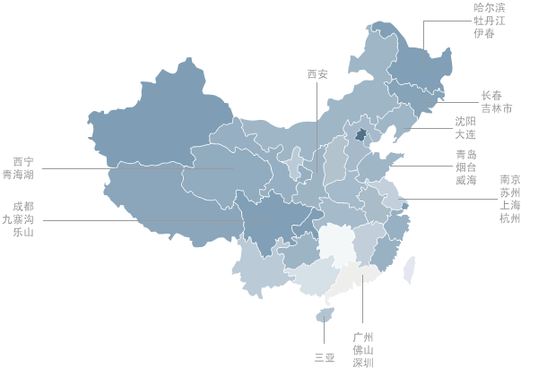

Index
·
Blog
·
Project
·
Photography
关于
你好，我叫
王磊
，但大家习惯叫我
Kenshin
或
KS
，80 后大叔。
早年混迹于网络，
kenshin
/
wonlen
/
kenshin726
/
wanglei001
大多都是我。
希望
生活与工作能得到平衡
，所以从 07 年低开始，基本上处于远程工作状态，现在是
独立开发者
。
践行
简单、执着、坚持
原则。
除了喜欢码代码外，还包括：摄影、手冲、茶、
绘画
、
徒步、骑行、旅行
。
心愿是做一些让这个世界变得更美好的小事。
足迹
由于
工作性质及热爱旅行
缘故，以下是我曾去过（工作 / 旅游）的地区，希望可以去更多的地区。

一些文章
前端开发技术栈（概览）
为了完美阅读模式这个小目标 ，我适配了 160+ 个网站，因此诞生了它 - 简悦 ：沉浸式阅读的 Chrome 扩展
我是如何使用简悦来做知识管理的
西宁、塔尔寺、青海湖、茶卡盐湖 -- 西北偏北的心灵之旅
百年沧桑，中华巴洛克建筑群行摄 -- 镜头下的哈尔滨老道外